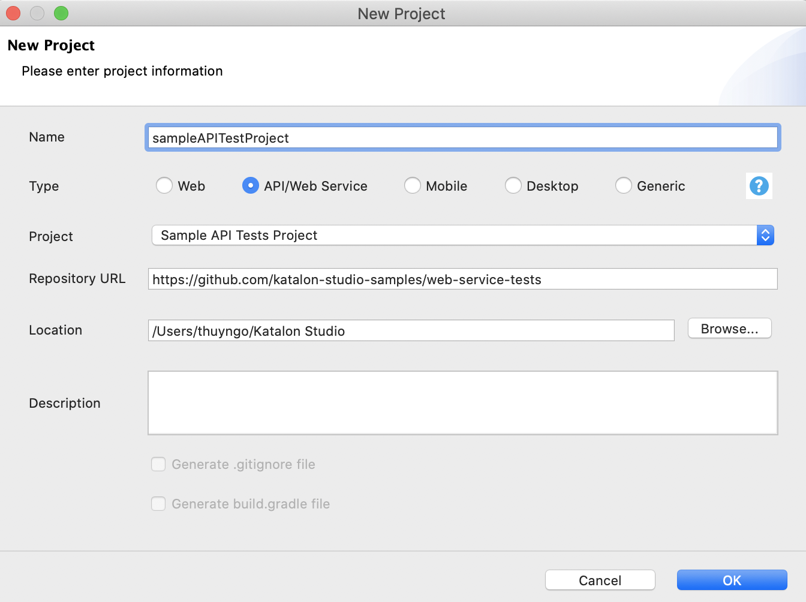
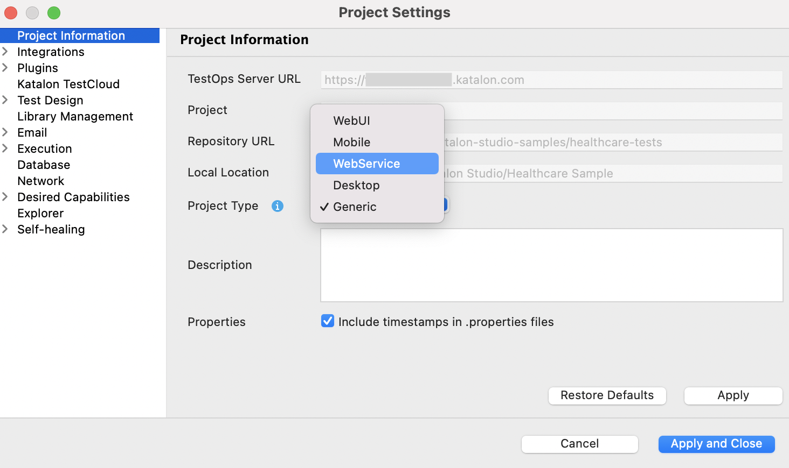

API/Web Service project in Katalon Studio
Katalon Studio supports API/Web Service testing project, which allows separating the API/Web Service testing from Web UI and Mobile testing. You can also perform more API/Web Service automation tasks on Katalon Studio such as Quickstart wizard, import Swagger or WSDL definition File/URL directly, or retrieve the request history at any time.
The update comes with a interface, including a toolbar and a view that serve only for API/Web Service testing.
In Katalon Studio - Standalone Edition, to create a new API/Web Service project, select API/Web Service type in the New Project dialog and specify all required project information.

In Katalon Studio - Platform Edition, go to Project Information > Project Type > WebService to change project type and enable the toolbar for API testing.

Toolbar
The main toolbar contains API/Web Service testing related features only to help you navigate around the app easily and intuitively.

Request History panel
Same with a Katalon project, the left column now have the Request History view where all the sent requests are saved here. You can freely access and retrieve them to work or save as a request object in the object repository.

- To learn more about API, refer to chapter 3 of our Katalon Academy course: How to Utilize API for Effective Test Execution.